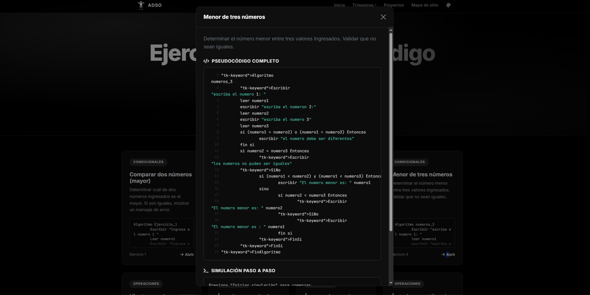

PSeInt
01 · Ejercicios de Pseudocódigo
Colección de ejercicios de lógica de programación resueltos en PSeInt. Incluye un simulador interactivo paso a paso para comprender la ejecución de condicionales, ciclos y variables.
Ver proyecto